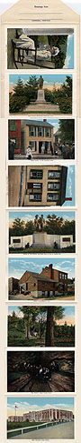
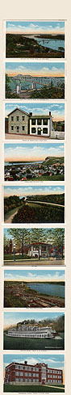

|

|

|
The postcard above was one of
several that went on sale in Hannibal not long after MT
re-visited the town in 1902. You can see other
early-20th-century souvenirs of MT's Hometown from Kevin
MacDonnell's collection in the MARK TWAIN COLLECTIBLES
section of the archive.
The same photo is included in the set of images
packaged together into the elaborate souvenir at left.
This card set probably first went on sale in 1936, just after
the MT Bridge was opened to traffic. It's re-presentation
emphasizes the thriving modern city rather than the sleepy
village: the past is perched on pedestals, while the present
is defined by new schools and hospitals.
The photograph on the card below was probably
taken in the early 1950s, though it claims to re-present a
past that by that time had been gone for almost a century.
Since then that past is still further away, but the card
remains on sale, and is typical of the image of "America's
Hometown" that Hannibal has cultivated and marketed for the
last half century. Where children in bare feet might once
have stood for poverty or backwardness (note how well-dressed
the Hannibal youth are in the cave photo left), they
now carry visitors back to a time rich in nostalgic
significance. |
){kind=link}
){kind=link}